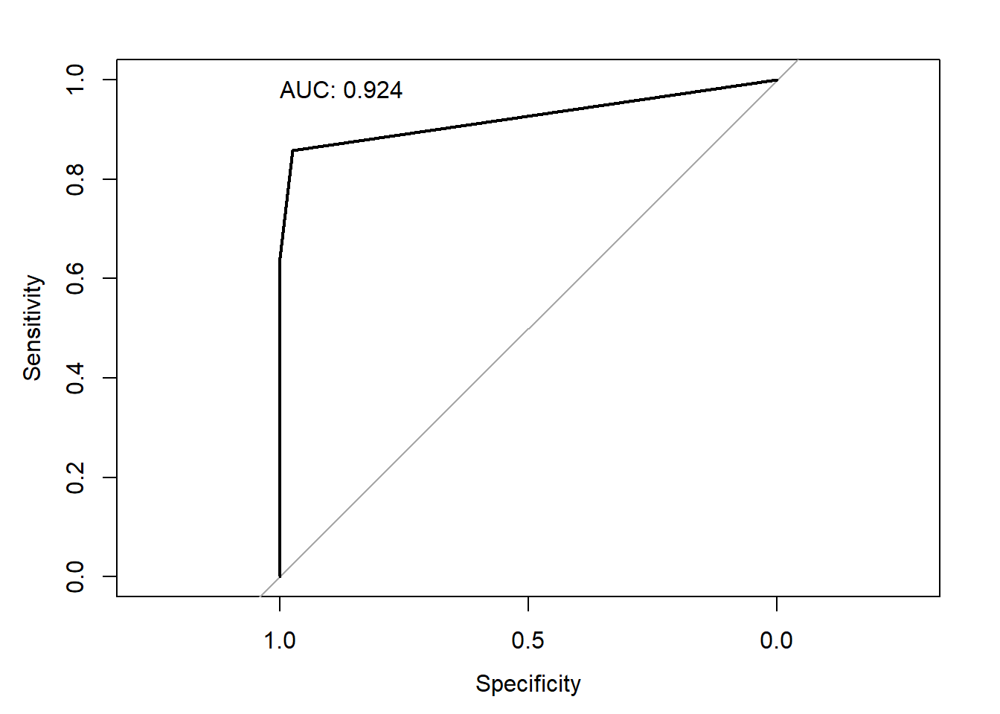

Code
celiac_df <- data.frame(
celiac = c(rep(0,863), rep(1,14)), # create variable for disease status
ttg = c(rep(0,841),rep(4,22), rep(0,2),rep(4,3),rep(10,9)) # create variable for tTG value
)Alex Kaizer
University of Colorado-Anschutz Medical Campus
This page is part of the University of Colorado-Anschutz Medical Campus’ BIOS 6618 Recitation collection. To view other questions, you can view the BIOS 6618 Recitation collection page or use the search bar to look for keywords.
In some cases, we may be asked to create an ROC curve from tabular data. Our first step is that we need to convert the tabular data into a long format dataset (i.e., one and only one row per each participant represented in the table). There are a few ways we can approach this problem, here we will review two strategies using a different made up prospective Cohort study for diagnosing Celiac disease based on the Tissue Transglutaminase IgA antibody (tTG-IgA):
| tTG-IgA Range | Not Celiac | Celiac |
|---|---|---|
| <4 | 841 | 2 |
| 4-10 | 22 | 3 |
| > 10 | 0 | 9 |
If we haven’t been given any of the data in tabular form yet, it may be just as easy to create a data frame directly:
Then we can see that using pROC::roc we can generate a receiver operating characteristic curve and calculated its AUC:
Setting levels: control = 0, case = 1Setting direction: controls < casesNotice how the output tells us which celiac group is assumed to be the controls and the cases. This can be helpful to check that we have the right classifications for our interpretations. It also tells us which directionality of the numeric ttg is being used for classification (i.e., specifically that values below a threshold are assumed to predict controls and values above the threshold to predict cases).

Area under the curve: 0.924With only 3 thresholds (i.e., 0, 4, and 10) it isn’t the most exciting ROC curve, but we do see that its high AUC suggests tTG as a predictive tool to identify Celiac disease is better than random chance.
Another option is to use some combination of functions to manipulate an existing contingency table of the \(N\)’s in each group. Here we see how we can use reshape2::melt and splitstackshape::expandRows:
Not Celiac Celiac
<4 841 2
4-10 22 3
>10 0 9 Var1 Var2 value
1 <4 Not Celiac 841
2 4-10 Not Celiac 22
3 >10 Not Celiac 0
4 <4 Celiac 2
5 4-10 Celiac 3
6 >10 Celiac 9The following rows have been dropped from the input:
3[1] 877 2 Var1 Var2
1 <4 Not Celiac
1.99 <4 Not Celiac
1.499 <4 Not Celiac
2.8 4-10 Not Celiac
5.1 4-10 Celiac
6.8 >10 CeliacFor the pROC::roc function, we need to convert this into a numeric format. We should also create a column for Celiac to avoid the function having to induce a logical outcome of TRUE or FALSE based on just the character string alone (i.e., being explicit helps us avoid unknown R defaults that might affect our results). One approach is to create new columns and leverage which() statements:
# Create column for numeric version of tTG variable where we set lower limit as value
celiac_df2$ttg <- NA
celiac_df2$ttg[which(celiac_df2$Var1 == '<4')] <- 0
celiac_df2$ttg[which(celiac_df2$Var1 == '4-10')] <- 4
celiac_df2$ttg[which(celiac_df2$Var1 == '>10')] <- 10
# Create column for logical indicator of Celiac
celiac_df2$celiac <- celiac_df2$Var2=='Celiac'With a numeric variable, we can generate the ROC curve and calculate the AUC:
---
title: "Creating ROC Curves from Tabular Data"
author:
name: Alex Kaizer
roles: "Instructor"
affiliation: University of Colorado-Anschutz Medical Campus
toc: true
toc_float: true
toc-location: left
format:
html:
code-fold: show
code-overflow: wrap
code-tools: true
---
```{r, echo=F, message=F, warning=F}
library(kableExtra)
library(dplyr)
```
This page is part of the University of Colorado-Anschutz Medical Campus' [BIOS 6618 Recitation](/recitation/index.qmd) collection. To view other questions, you can view the [BIOS 6618 Recitation](/recitation/index.qmd) collection page or use the search bar to look for keywords.
# Calculating the ROC Curve from Tabular Data
In some cases, we may be asked to create an ROC curve from tabular data. Our first step is that we need to convert the tabular data into a long format dataset (i.e., one and only one row per each participant represented in the table). There are a few ways we can approach this problem, here we will review two strategies using a different made up prospective Cohort study for diagnosing Celiac disease based on the Tissue Transglutaminase IgA antibody (tTG-IgA):
| tTG-IgA Range | Not Celiac | Celiac |
|:--------------|:----------:|:------:|
| <4 | 841 | 2 |
| 4-10 | 22 | 3 |
| > 10 | 0 | 9 |
## Strategy 1: Create a Data Frame Manually
If we haven't been given any of the data in tabular form yet, it may be just as easy to create a data frame directly:
```{r}
celiac_df <- data.frame(
celiac = c(rep(0,863), rep(1,14)), # create variable for disease status
ttg = c(rep(0,841),rep(4,22), rep(0,2),rep(4,3),rep(10,9)) # create variable for tTG value
)
```
Then we can see that using `pROC::roc` we can generate a receiver operating characteristic curve and calculated its AUC:
```{r, warning=F}
celiac_roc <- pROC::roc( celiac ~ ttg, data=celiac_df )
```
Notice how the output tells us which `celiac` group is assumed to be the controls and the cases. This can be helpful to check that we have the right classifications for our interpretations. It also tells us which directionality of the numeric `ttg` is being used for classification (i.e., specifically that values below a threshold are assumed to predict controls and values above the threshold to predict cases).
```{r, message=F}
library(pROC)
plot(celiac_roc, print.auc=TRUE,print.auc.x=1, print.auc.y=1)
auc(celiac_roc)
```
With only 3 thresholds (i.e., 0, 4, and 10) it isn't the most exciting ROC curve, but we do see that its high AUC suggests tTG as a predictive tool to identify Celiac disease is better than random chance.
## Strategy 2: Convert a Contingency Table to a Data Frame
Another option is to use some combination of functions to manipulate an existing contingency table of the $N$'s in each group. Here we see how we can use `reshape2::melt` and `splitstackshape::expandRows`:
```{r}
# Step 1: create a table of the information, here we'll just make it as a matrix object
celiac_mat <- matrix( c(841,22,0,2,3,9), ncol=2, byrow=FALSE, dimnames=list(c('<4','4-10','>10'), c('Not Celiac','Celiac')))
celiac_mat
```
```{r, warning=FALSE}
# Step 2: convert to a data frame
library(reshape2)
library(splitstackshape)
celiac_melt <- melt(celiac_mat)
celiac_melt
celiac_df2 <- expandRows(celiac_melt, 'value')
dim(celiac_df2)
celiac_df2[c(1,100,500,850,867,877),]
```
For the `pROC::roc` function, we need to convert this into a numeric format. We should also create a column for Celiac to avoid the function having to induce a logical outcome of TRUE or FALSE based on just the character string alone (i.e., being explicit helps us avoid unknown R defaults that might affect our results). One approach is to create new columns and leverage `which()` statements:
```{r}
# Create column for numeric version of tTG variable where we set lower limit as value
celiac_df2$ttg <- NA
celiac_df2$ttg[which(celiac_df2$Var1 == '<4')] <- 0
celiac_df2$ttg[which(celiac_df2$Var1 == '4-10')] <- 4
celiac_df2$ttg[which(celiac_df2$Var1 == '>10')] <- 10
# Create column for logical indicator of Celiac
celiac_df2$celiac <- celiac_df2$Var2=='Celiac'
```
With a numeric variable, we can generate the ROC curve and calculate the AUC:
```{r, warning=F}
celiac_roc2 <- pROC::roc( celiac ~ ttg, data=celiac_df2 )
plot(celiac_roc2, print.auc=TRUE,print.auc.x=1, print.auc.y=1)
auc(celiac_roc2)
```